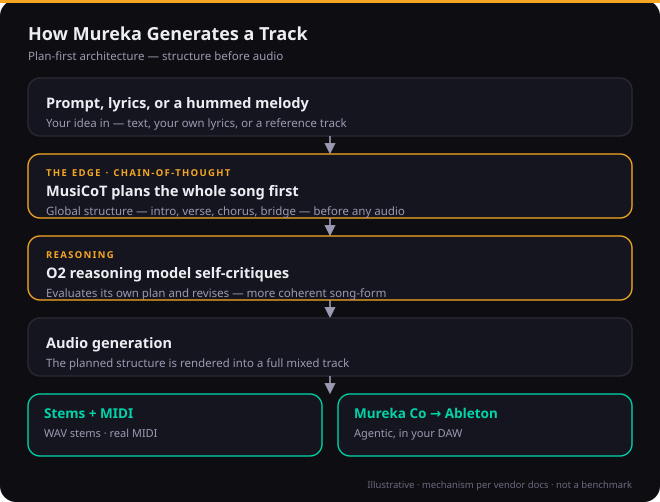
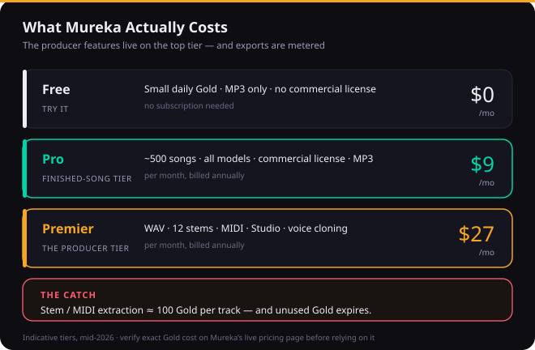
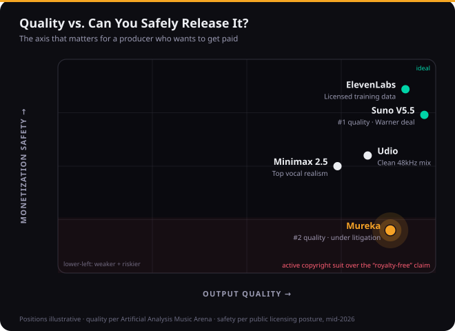

Mureka can do something no other AI music tool can. Describe a part, and its desktop app generates it, splits the stems, and drops them into your Ableton session beat-aligned — no browser tab, no file juggling, just a co-producer that lives beside your DAW. Export real MIDI from a generation and rebuild it with your own instruments. Hum a melody and get a full arrangement around it. For a producer, that feature list is genuinely exciting, and it is the reason this tool deserves a serious look rather than a quick dismissal.
It also has a 1.3-star Trustpilot page, a habit of ignoring your prompt after the third song, and an active lawsuit alleging that the “royalty-free” promise stamped on every track it makes is false. Most Mureka coverage online sits at one of two extremes: vendor-adjacent pages calling it the “#1 AI music generator,” or one-star rants calling it a scam. Neither helps you decide. This review lives in the middle on purpose, because that is where the truth is — the capabilities are real, the problems are real, and the only useful question is which of those facts should decide it for you.
How we approached this. We re-verified every feature and price against Mureka’s live product this session rather than repeating older reviews; we cross-checked the quality claims against the neutral Artificial Analysis blind-vote leaderboard instead of vendor marketing; we read the actual federal complaint; and we weighed the user-trust record across more than a hundred public reviews. Where we state a number, it is sourced and dated. Where something needs first-party audio measurement we have not yet completed, we say so plainly rather than fake a chart. Let’s get into it.
Mureka is the most capable production toolkit in AI music — real MIDI, clean stems, and an agentic Ableton plugin nobody else matches — wrapped in the least trustworthy product experience in the category. If you are a producer who wants raw material to finish in your own DAW, the Premier tier (around $27/month) can earn its place, with two hard caveats: protect your payment method against the well-documented billing problems, and do not build a monetized release pipeline on it while the copyright lawsuit is unresolved. If you just want a finished song from a prompt, Suno is the safer, better-behaved pick.
The Verdict
The most capable toolkit in AI music, wrapped in the least trustworthy product around it — brilliant for raw material, dangerous as a release pipeline.
| Producer capability (Co + MIDI + stems) | 8.7 | |
| Output quality | 7.2 | |
| Vocal realism & voice options | 7.5 | |
| Control & structure (MusiCoT / O2) | 8.3 | |
| Trust & business practices | 3.5 | |
| Licensing & monetization safety | 4.5 | |
| Value | 6.0 |
That overall is a defended judgement, not an average — and the spread is the whole story. On producer capability (8.7) Mureka is near the top of the entire category: real MIDI, twelve-stem separation, melody-idea input, and the agentic Mureka Co workflow are a combination no rival offers. Control & structure (8.3) is real too, thanks to its plan-first reasoning model that decides a song’s shape before it commits to audio. But output quality (7.2) and vocal realism (7.5) are merely good, not best-in-class, and inconsistent in practice. Then the floor drops out: trust & business practices (3.5) reflects a 1.3-star public record built on billing and cancellation complaints, and licensing & monetization safety (4.5) reflects an active suit alleging the royalty-free claim is false. Value (6.0) sits in between because the features you actually want are gated behind the $27 tier and metered on top of that. Capability pulls the score toward eight; trust and licensing drag it back to 6.2. Every one of those numbers is defended in the sections below.
What Mureka Actually Is (and Who Really Makes It)
Mureka is a text-to-song generator with a production layer bolted on. You give it a prompt, your own lyrics, or a reference track, and it returns a full song — vocals, arrangement, mix. That much it shares with Suno and Udio. What separates it is the pipeline after the song: stem separation, MIDI export, voice cloning, and a desktop app that reaches into your DAW. The name is “Music” plus “Eureka,” and the positioning has always been production-readiness rather than one-click novelty.
In day-to-day use it exposes that through several creation modes, which is the first sign it’s built for people who want to shape a result rather than accept a first draft. Easy mode turns a single sentence into a complete song and has recently shifted toward a more conversational, back-and-forth flow. Custom mode opens up lyrics, genre, vocal gender, BPM, and instrument choices for people who arrive knowing what they want. Reference mode takes an uploaded track or a link and generates something in its style, and Remix transforms an existing piece into a new version. On the Premier tier there’s also a Music Agent Studio that builds songs through dialogue across several steps — ideation, revision, structure planning — rather than a single prompt. None of this is essential to understand the verdict, but it’s why the tool feels more like a workstation than a vending machine.
On who builds it, be precise, because it matters for the rights questions later. The operator named on Mureka’s own terms of service is Skywork AI Pte. Ltd., a Singapore company, governed by Singapore law with disputes routed to Singapore arbitration. It is widely reported — and alleged in U.S. litigation — to be tied to the Chinese firm Kunlun Tech, and credible outlets attribute the underlying models to Kunlun. We’d describe the ownership as “Skywork AI of Singapore, widely reported as connected to Kunlun Tech” rather than stating the chain as settled fact. Since its 2024 consumer launch the platform reports roughly ten million users, and third-party traffic estimates put it near three million monthly visits, weighted toward the United States, Japan, and Korea — a genuinely global, multilingual base, which is consistent with where its language strengths lie.
The technology Mureka leans on hardest is MusiCoT — Music Chain-of-Thought — which plans a song’s global structure before generating any audio, rather than predicting it token by token. Sitting on top is the O2 reasoning model, which evaluates and revises its own plan, and the interface will even show you some of that thinking: the time signature, BPM, and instrument decisions it’s making. One honest clarification the marketing blurs: the model the neutral leaderboards actually rank is V8; the vendor markets a newer V9 build that has not been independently benchmarked. When we talk about measured quality below, we mean V8, because that is the number anyone can verify rather than take on faith.
The Capabilities That Genuinely Set It Apart
This is the section where Mureka earns its 8.7 on capability, and it deserves the credit without hedging. Start with the headline feature. Mureka Co is a desktop application that operates inside your DAW through plain-language instructions: ask for a darker pad on track three, a lo-fi beat, or a vocal that fits the chords you already have, and it generates the part and places it in the session, beat-aligned. It can split stems, extend sections, and remix — all without leaving Ableton, and it can even reference files already on your machine by description rather than by hunting through folders. As of mid-2026 it supports Ableton Live only, with more hosts promised, and it spends Gold credits as it works. No other major generator offers an agentic, in-session workflow like this. If you have ever bounced an AI track, re-imported it, and spent twenty minutes lining it up by ear, you understand immediately why this matters.
It’s worth being concrete about how that changes a session, because the convenience is easy to underrate on paper. Say you have a chord progression and a drum loop down but no bassline you like. Instead of generating a whole song elsewhere, exporting, importing, and tuning it to your tempo, you tell Mureka Co “warm analog bass that follows these chords,” and it generates a part that fits the key and tempo of the open session and drops it onto a new track, aligned. Want it darker, or an octave down, or doubled with a sub? You ask, and it iterates in place. That tight loop — idea, generate, adjust, all without leaving the arrangement — is the thing that turns AI from a novelty you visit into a tool you actually compose with. It’s early, Ableton-only, and credit-metered, but the direction is the most interesting thing happening in this category.

Behind Mureka Co sits the rest of the producer kit, and it’s the most complete in the category. Real MIDI export means a generation isn’t a locked audio file — you can pull the notes into your DAW and re-voice them with your own instruments, which is the difference between a reference you admire and a starting point you can actually build on. Twelve-stem separation hands you vocals, drums, bass, melody, and more as individual tracks for mixing or sampling. Melody-idea input lets you hum or upload a snippet and have Mureka build a full arrangement around it — a feature genuinely unique among the majors, and a gift for anyone who writes by ear rather than by prompt, because it bridges the gap between the tune in your head and a full production faster than describing it ever could.
Reference matching takes an uploaded track or a YouTube link and generates in its style, which is often a better steer than a paragraph of genre adjectives — showing the model what you want beats telling it. The lyrics-first workflow respects your verse, chorus, and bridge tags instead of treating words as an afterthought, so if you write your own lyrics, Mureka matches musical phrases to your structure rather than flattening it. Add voice cloning from a short clean sample, a library of pre-built AI vocalists, ten-plus languages with genuinely standout Chinese, Japanese, and Korean, a built-in marketplace for selling tracks ($5 non-exclusive, $30 exclusive), and a REST API for developers, and the breadth is real. The plan-first reasoning underneath all of it tends to produce cleaner song-form than single-pass generators: intros that resolve, choruses that arrive where they should, fewer arrangements that wander off the idea halfway through.
Mureka also edits, not just generates, which is part of why it reads as a workstation. Beyond extending and redoing segments, it can optimize specific parts of a song — fix a weak ending, adjust the structure, or swap the style of a single section — and it’ll generate AI cover art, static or animated, to go with a track. None of these are reasons to buy it on their own, but together they’re the difference between a one-shot generator and something you can iterate inside, which is the whole pitch.
How Good Is the Output, Really?
Capability and quality are not the same thing, and this is where the honest picture gets more mixed. On the neutral Artificial Analysis Music Arena — blind listening tests where users pick the better of two anonymized clips — Mureka V8 lands a strong second place behind Suno V5.5 in both categories: roughly 1,158 to Suno’s 1,184 on instrumentals, and 1,144 to Suno’s 1,156 on vocals. That is a genuinely good result, and it quietly debunks the “#1 in everything” claim you’ll see on promotional pages: Mureka is excellent, not the best. It briefly held the top spot when its V8 model edged Suno’s older V4.5, but the leaderboard moved the moment Suno shipped V5.5. Treat any “number one” headline as a snapshot, not a standing fact.
The bigger quality story isn’t the ceiling, it’s the variance. In practice the output swings — a strong, coherent track one generation, a stiff or off-brief one the next. Reviewers consistently describe the best outputs as deliberate and well-structured, especially in rock and the languages Mureka specializes in, while noting the mix and master trail Suno and Udio’s most polished results. The instrumental side tends to hold together better than the vocals, which is worth knowing if you plan to use Mureka mainly for backing tracks. Used the way it’s meant to be used — as a source of stems and MIDI you finish yourself — that variance matters far less, because you’re treating the output as raw material rather than a master that has to be perfect out of the box.
On vocals specifically — the dimension that most decides whether a track feels publishable or like a demo — Mureka is good but not the leader. Its voices are clean and, in its strong languages, more accurate than anything else available; Mandarin tonal pronunciation and Korean consonant clusters land in a way Suno still fumbles. In English, though, Suno’s V5.5 captures more of the human detail — breath, vibrato, the small dynamic shifts that sell a performance — and Minimax 2.5 edges everyone on raw realism. Voice cloning from a thirty-to-sixty-second sample works and is competitive on short phrases, weaker on long sustained lines. If your project lives or dies on an English lead vocal that fools listeners, audition Suno alongside it; if you’re working multilingually, Mureka is frequently the better and sometimes the only usable choice.
First-party measurement — in progress, stated honestly
Our edge is putting audio through the same BS.1770 loudness, true-peak, and stereo analysis we run on commercial masters, plus verifying that exported stems and MIDI actually match the audio. That measured chart isn’t in this version yet, so we’re not going to print one — a fabricated graph is worse than none. One finding from our research is worth flagging now and verifying yourself: a track generated with the “no vocals” toggle still returned a vocal stem on separation. Treat clean instrumentals as something to confirm, not assume. We’ll swap the measured data in when the test set is complete.
The Consistency Problem
If you read only one criticism of Mureka, make it this one, because it’s the most reported and the most likely to frustrate you in real use. Multiple independent reviewers describe the same arc: the first two or three generations of a session are strong, and then quality and prompt adherence drift. Prompt adherence is the sharper edge of it — recent-version users report asking for a rap or a drum-and-bass track and getting classical or rock back, the model simply not following instructions it seemed to follow an hour earlier. Others describe burning through credits trying to recapture the quality of an early take, with the free or first outputs sometimes feeling stronger than anything they generated later in the same sitting.
Some paying users go further and report quality dropping noticeably right after they upgraded their subscription, which has fueled a widely-repeated theory that the platform throttles output once it has your money. We want to be fair about what that is and isn’t. The pattern of session degradation is real and reported across unconnected sources, so it’s not one cranky reviewer. The explanation — deliberate throttling versus session-state variance versus credit-burn quietly nudging people into worse takes — is unproven, and we won’t assert a motive we can’t demonstrate. The Extend feature draws similar complaints: it works in limited situations, can reduce audio quality, and struggles near the four-minute mark, which makes finishing longer pieces awkward. Practically, the workaround is the same regardless of cause: keep sessions short, bank the good takes early, regenerate sparingly, and don’t grind a single idea hoping the tenth attempt beats the second. It usually won’t.
The Real Cost: Gold, Tiers & the Metered Export Trap
Mureka’s pricing is where buyers get surprised, so spend a minute here before you subscribe. There’s a free tier with a small daily allotment of “Gold” credits, no commercial license, and MP3-only output — fine for kicking the tires, useless for real work. Paid plans run on Gold, and the gap between them is the whole decision.

Pro, around $9/month (cheaper billed annually), is the finished-song tier: all models, roughly 500 songs, MP3 download, and a commercial license. Premier, around $27/month, is the producer tier — and it’s the only one that unlocks WAV, twelve-stem separation, MIDI export, the Studio editor, and voice cloning. So the entire reason a producer wants Mureka lives behind the $27 plan, which lands it in the same neighborhood as Suno’s top tier, not the bargain bracket the “cheap AI music” framing implies.
And here’s the part almost no review mentions: stem and MIDI extraction is metered — roughly 100 Gold per track, even on Premier — and unused Gold expires whether you touch it or not. Work the math the way you actually create. If a finished track takes you a few regenerations plus a stem-and-MIDI pull, your real Gold cost per usable result is several times the cost of a throwaway first draft, and a heavy export month can run the tier dry before its “songs per month” headline suggests. That’s not unique to Mureka — every credit-based generator’s marketed song counts assume drafts you never touch again — but the per-extraction charge for the producer features, combined with expiring credits, makes Mureka’s effective cost notably higher than its sticker. Confirm the live figures before you commit; Mureka’s tier names and prices shift, and the site sometimes disagrees with itself on what a plan is even called.
Trust, Billing & Cancellation
This is the section that drags an otherwise impressive tool down to a 6.2, and it would be dishonest to soften it. Mureka’s public Trustpilot record sits around 1.3 out of five, and the complaints are strikingly consistent. People sign up for what they think is one month and discover an annual charge days later. They go to cancel and can’t find a working path in the dashboard, ending up disputing through PayPal, Apple, or their bank to stop the billing. Refund requests go unanswered, or get bounced back as “open a dispute yourself.” Several report charges continuing after they believed they’d cancelled. Layered on top is the Gold-expiry issue — credits people paid for vanishing on renewal — which they reasonably read as a second hidden cost they were never clearly warned about.
If you try Mureka anyway, protect yourself
Pay with a virtual, single-use, or low-limit card you can freeze, not your primary card. Screenshot the exact plan and billing interval before you confirm. Read the renewal and cancellation terms first, and set a calendar reminder a few days before any renewal. None of this should be necessary for a paid product — that it is, is itself part of the review.
To be balanced: a minority of reviewers are genuinely happy, particularly those creating in Mureka’s strong languages or using it casually within the free and Pro tiers, and the product clearly delights some people who got exactly what they wanted from it. But a 1.3-star aggregate built largely on billing conduct rather than on the music is not noise you can wave away. It’s the single biggest reason to keep your financial exposure to this company small and deliberate, no matter how much you like what it can make.
The Licensing & Lawsuit Reality
For anyone planning to release or monetize, this section outranks every other in the review. Mureka markets its paid output as royalty-free with full commercial rights. In December 2025, plaintiffs filed Attack the Sound LLC v. Kunlun Tech Co. in the U.S. District Court for the Northern District of Illinois, alleging that Mureka was trained on copyrighted recordings without authorization and that its “royalty-free” and “copyright-friendly” marketing is therefore false. The complaint brings counts including copyright infringement, DMCA violations, and Illinois biometric and right-of-publicity claims, and it alleges the ownership certificate Mureka issues carries false rights-management information.
Two things must be said clearly. First, these are allegations; the case is early and no court has found liability, so nobody should describe Mureka as having “lost” anything. Second, the practical takeaway for you is about risk, not a verdict: until this resolves, commercially releasing Mureka tracks means doing so against a live, unresolved claim that the platform’s central rights guarantee is misrepresented. That’s a meaningfully different risk profile from its main rivals. It also stacks on top of the broader, tool-agnostic reality that the U.S. Copyright Office currently holds purely AI-generated work may not qualify for copyright protection without meaningful human authorship, and that AI output tends to flag on standard detectors used by distributors — so “royalty-free” and “protectable, releasable, and undetectable” are not the same promise.

This is the licensing-divergence picture, and it’s the most useful single frame in the whole category. Suno has moved toward legitimacy, partnering with Warner Music. Udio sits in the middle. And ElevenLabs has gone furthest, training on commercially-licensed data through Merlin Network and Kobalt — the safest option in 2026 if monetization safety is your priority. Mureka sits at the opposite corner: high on capability, low on the question of whether you can safely sell what it makes. If you’re using it for personal demos, learning, or to generate stems you’ll heavily transform into something new, that risk is small and probably acceptable. If you’re shipping client work or building a catalog for streaming revenue, weigh it seriously, and read our guides on releasing AI music and whether you can copyright it before you commit a release schedule to this tool.
Mureka vs the Field (2026)
No single tool wins outright; they optimize for different jobs, and pretending otherwise is how people end up on the wrong one. The table below is the honest shape of the 2026 landscape, with the two columns producers actually decide on — what you can pull into a DAW, and how safe the output is to monetize.
| Tool | Best at | DAW / export | Monetization safety |
|---|---|---|---|
| Mureka | Production control, MIDI, multilingual | MIDI + stems + agentic Ableton app | Low — active suit |
| Suno V5.5 | Best finished songs, English vocals | Stems + browser DAW; no MIDI | Mid — Warner partnership |
| Udio | Cleanest 48kHz mix | Stems + inpainting | Mid |
| ElevenLabs | Safest rights, clean vocals | Stems | High — licensed training data |
| Minimax 2.5 | Most realistic vocals | Limited | Mid |
The short version: pick Suno if you want a polished song from a prompt with minimal fuss and the most expressive English vocals; pick Udio if raw 48kHz mix fidelity is your priority; pick ElevenLabs if you need the cleanest rights story for monetized content; pick Minimax if a believable human voice is the one thing that matters; and pick Mureka if you want the deepest production toolkit and you’re going to finish the work in your own DAW. A useful trick if you’re torn: run the same prompt through two free tiers and let your ears decide, since the gap between them is often genre-specific. For closer head-to-heads, see our Suno vs Udio comparison and the full AI music production tools guide.
Who Should Use It — and Who Shouldn’t
Use Mureka if you’re a producer who treats AI output as raw material: you want MIDI and stems to rebuild in Ableton, you write by humming melodies, you work in Chinese, Japanese, or Korean, or the agentic Mureka Co workflow genuinely speeds up your sessions. For that person, on the Premier tier, with a protected payment method and realistic expectations about consistency, Mureka offers something no competitor does. It is the most capable production toolkit in the category, and used as a toolkit rather than a jukebox, it delivers real value — the kind that’s worth working around the rough edges for.
Be cautious or look elsewhere if you just want finished songs from prompts (Suno is better and far better-behaved), if you’re building a monetized catalog or doing client work where the licensing cloud is a genuine liability, or if you’re the kind of buyer who’ll forget to cancel a free trial — the billing record makes that an expensive mistake rather than a minor one. The capability is real; so are the caveats. Go in holding both at once, and you’ll get the value Mureka genuinely offers without the regret that fills its review pages.
Put Mureka to the Test: Three Exercises
Twenty focused minutes inside the tool will teach you more than any review. These three graded exercises are built to expose exactly where Mureka shines and where it bites.
- Upload a reference track (or paste a link) and use Reference mode to generate a song in its style.
- Play the reference and the generation back to back and note three things Mureka captured and three it missed.
- Regenerate once with a tighter prompt. Decide whether attempt two actually beat attempt one — this is your first honest read on the consistency issue.
- On Premier, generate a track you like, then export the twelve stems and the MIDI — and note how much Gold each extraction costs you.
- Pull the MIDI into your DAW and re-voice the lead with your own instrument; check that the MIDI actually matches the audio.
- Generate one track with the “no vocals” toggle on, then separate it — confirm whether a vocal stem appears where there should be none.
- Run a finished Mureka track through an AI-detection check and a LUFS meter; note the integrated loudness and true peak against a −14 LUFS streaming target.
- Read Mureka’s commercial-rights and refund terms end to end, and write down exactly what they do and don’t promise.
- Document the full checklist you’d need to clear before releasing this commercially — given the open lawsuit, then decide honestly whether you actually would.